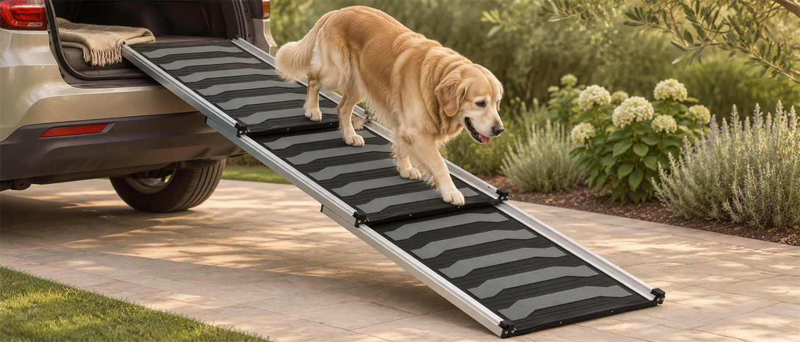
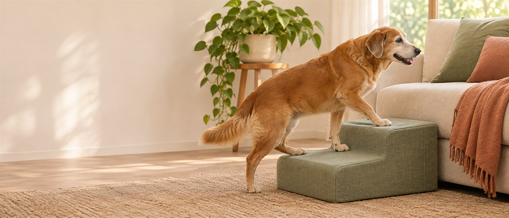
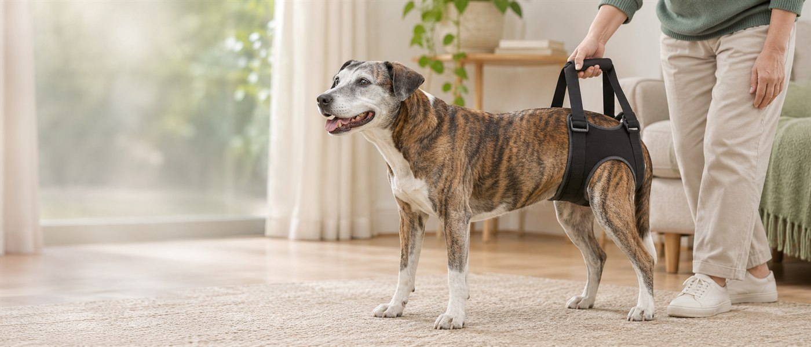

¿Le cuesta levantarse? 6 cambios en casa para ayudar a tu perro mayor
Ideas prácticas para mejorar el agarre, reducir saltos y elegir apoyos con orientación veterinaria.
Leer el artículo ↗Guías y consejos para elegir con calma y cuidar de los perros mayores en su día a día.
Ideas prácticas para mejorar el agarre, reducir saltos y elegir apoyos con orientación veterinaria.
Leer el artículo ↗
Una guía práctica para comparar camas, rampas, arneses, complementos articulares y productos de higiene.
Leer la guía ↗
Capacidad de carga, altura del maletero, longitud y agarre: qué revisar antes de comprar.
Leer el artículo ↗
Altura, profundidad, agarre y estabilidad: qué revisar antes de escoger una ayuda para subir al sofá.
Leer el artículo ↗
Qué medir, cómo valorar el ajuste y por qué conviene probarlo con orientación veterinaria.
Leer el artículo ↗